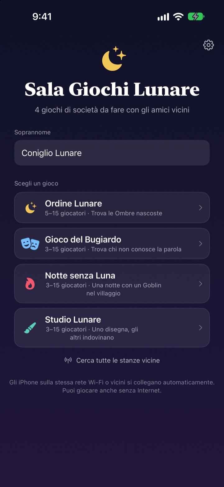
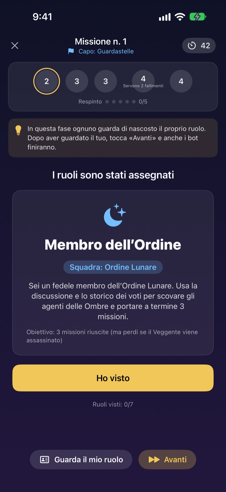
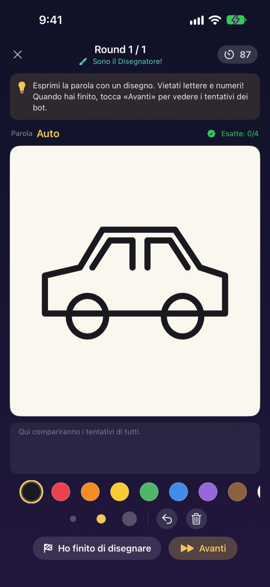
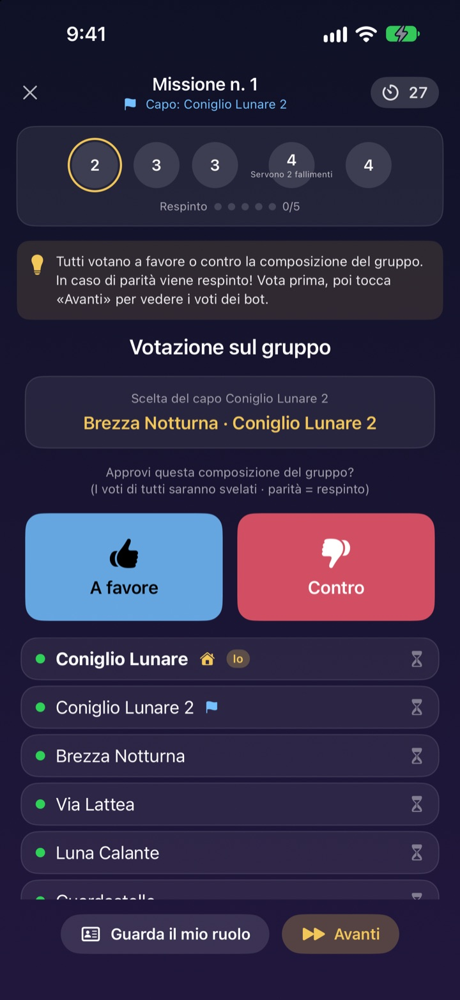

Ci siete tutti?
Tirate fuori l’iPhone.
Uno crea una stanza e chi è vicino entra in pochi secondi. Ruoli e parole segrete compaiono solo sullo schermo di ciascuno: niente carte e nessuno costretto a fare il narratore.
Tutti i giochi sono gratis. Niente account, niente internet.

Una partita al Gioco del Bugiardo
Immagina cinque iPhone sul tavolo e toccali uno alla volta per sbirciare. Solo uno non conosce la parola. Potete anche passarvi lo schermo tra amici.
Siete in tanti, ma non sapete a cosa giocare
Serata giochi, weekend in baita, Natale in famiglia. Per un gioco a ruoli nascosti qualcuno deve restare fuori a fare il narratore, e i bigliettini piegati non sono mai davvero segreti. In una casa vacanze con il Wi-Fi debole, niente giochi online. Con Sala Giochi Lunare sono gli iPhone a condurre, distribuire i ruoli e collegarsi.
Il tuo ruolo resta sul tuo schermo
All’inizio della partita ogni iPhone riceve il proprio ruolo o la propria parola. Niente carte da distribuire, niente «tutti chiudono gli occhi».
Durante il voto si vede solo chi ha già votato. Chi ha votato chi resta segreto fino alla rivelazione.

Quattro giochi per ogni compagnia
Nel Gioco del Bugiardo vince la parlantina, nell’Ordine Lunare si stanano le Ombre con missioni e votazioni, nella Notte senza Luna si cerca il Goblin in una sola notte, e nello Studio Lunare uno disegna e gli altri indovinano.
Ordine Lunare da 5 giocatori, gli altri da 3, tutti fino a 15.

Gioco nuovo? Imparato in pochi minuti
Ogni gioco ha la modalità Come si gioca, in cui fai una partita con i bot, un passo alla volta. Leggi il suggerimento in alto e tocca Avanti.
Se l’app si chiude o la connessione cade, tocca Riprendi nella schermata iniziale e torni nella stessa partita.

Tre passi per iniziare
- 1
Soprannome e gioco
Tutti aprono l’app, scrivono un soprannome e scelgono il gioco.
- 2
Crea o entra in una stanza
Uno crea la stanza, gli altri la trovano con Cerca stanze vicine.
- 3
L’host avvia
Quando ci sono tutti, l’host tocca Inizia partita. Al resto pensa l’app.
I quattro giochi
- Gioco del Bugiardo · da 3 a 15
- Tutti ricevono la stessa parola tranne uno. A turno la si descrive, poi si vota il Bugiardo. Se viene scoperto ma indovina la parola, il Bugiardo vince lo stesso.
- Ordine Lunare · da 5 a 15
- Smascherate le Ombre nascoste nell’Ordine. Il capo sceglie una squadra, tutti votano a favore o contro, e la squadra gioca in segreto successo o fallimento. Vince chi per primo si aggiudica tre missioni.
- Notte senza Luna · da 3 a 15
- Una notte sola, e un Goblin si nasconde nel villaggio. Di notte Sciamano, Ladro notturno e Burlone agiscono in segreto. All’alba si discute e c’è un solo voto per trovare il Goblin.
- Studio Lunare · da 3 a 15
- Uno disegna la parola, gli altri indovinano in chat. Più indovini in fretta, più punti fai, e chi disegna guadagna per ogni risposta giusta.
Ogni gioco si può provare prima da soli con i bot nella modalità Come si gioca.
Domande frequenti
Non vedo la stanza.
Controlla che host e giocatori siano sulla stessa rete Wi-Fi o vicini tra loro. Sala Giochi Lunare deve essere attiva in Impostazioni ▸ Privacy e sicurezza ▸ Rete locale per trovare i dispositivi vicini. Con Wi-Fi e Bluetooth attivi la connessione è più stabile.
Devo consentire l’accesso alla rete locale?
Sì, serve all’app per trovare gli iPhone vicini e collegarsi. Se hai toccato Non consentire, riattivalo in Impostazioni ▸ Privacy e sicurezza ▸ Rete locale.
Mi sono disconnesso durante la partita.
Riapri l’app e tocca Riprendi nella schermata iniziale per tornare nella stessa stanza e partita. Ruolo e punteggio restano. Se non si riconnette per un po’, rientra dall’elenco delle stanze.
Qualcuno non risponde e la partita è bloccata.
L’host può rimuovere in qualsiasi momento chi non risponde: la partita ricalcola con chi resta e va avanti. Con la modalità host GM si può anche saltare una fase bloccata.
Quanti giocatori servono?
L’Ordine Lunare ne richiede 5. Gioco del Bugiardo, Notte senza Luna e Studio Lunare partono da 3. Tutti arrivano a 15. Siete in pochi? Imparate le regole con i bot nella modalità Come si gioca.
Serve internet o un account?
No. Niente registrazione, accesso o internet. Gli iPhone vicini si collegano direttamente e i dati di gioco non vengono mai inviati a un server.
Posso provare un gioco da solo prima?
Sì. Scegli un gioco e poi Come si gioca (allenamento con i bot). I bot entrano nella stanza e giochi una partita intera passo dopo passo.
Come segnalo un bug o propongo un’idea?
Direttamente dall’app in Impostazioni (l’ingranaggio) ▸ Assistenza, oppure via email all’indirizzo qui sotto. Ti risponderemo il prima possibile.
Bug, idee o altre domande: scrivi a mizzking75@gmail.com.